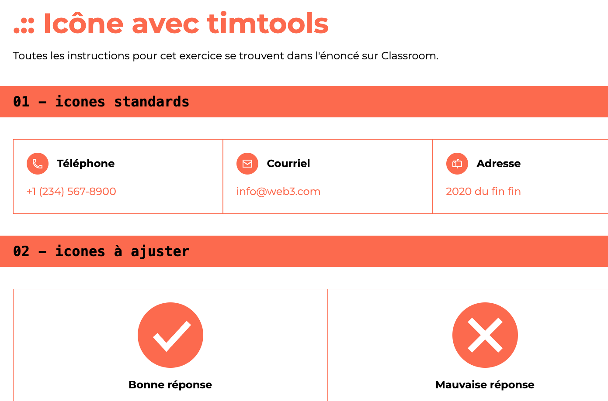

Mes premiers laboratoires

SEM 01 - RÉVISION
Ce laboratoire est une révision rapide des deux premières sessions de conception web.
HTML + SCSS
VOIR LE LABORATOIRESEM 02 - TIMTOOLS
Ce laboratoire s’agit du tout premier labo où nous avons commencé à utiliser l’outil de notre programme : TimTools.
SCSS
VOIR LE LABORATOIRE
SEM 03 - PORTFOLIO LOUIS LAJOIE
Pour celui-ci, il s’agissait d’un autre laboratoire de révision portant sur les nouvelles façons d’organiser notre code.
HTML + SCSS
VOIR LE LABORATOIRE
SEM 04 - ICÔNES ET CLASSES JS
Pour ce labo, nous avons commencé à utilier le javascript pour l'application d'icônes en général.
SCSS + JAVASCRIPT
VOIR LE LABORATOIRE